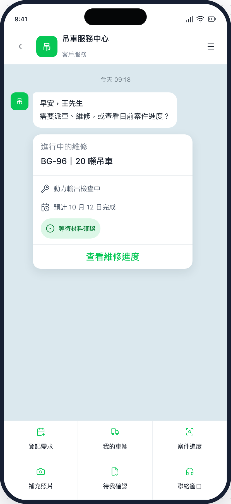
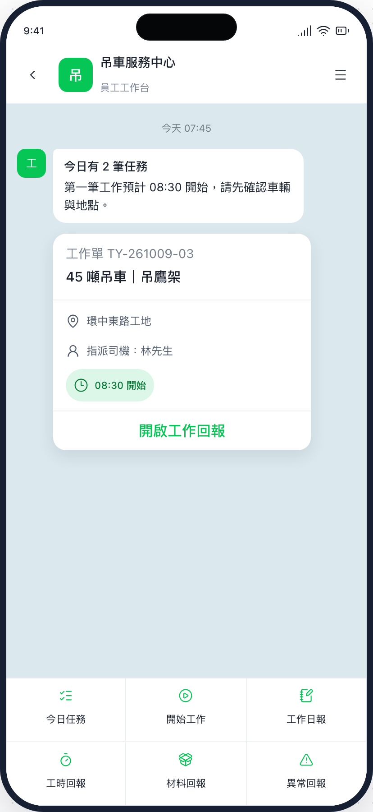
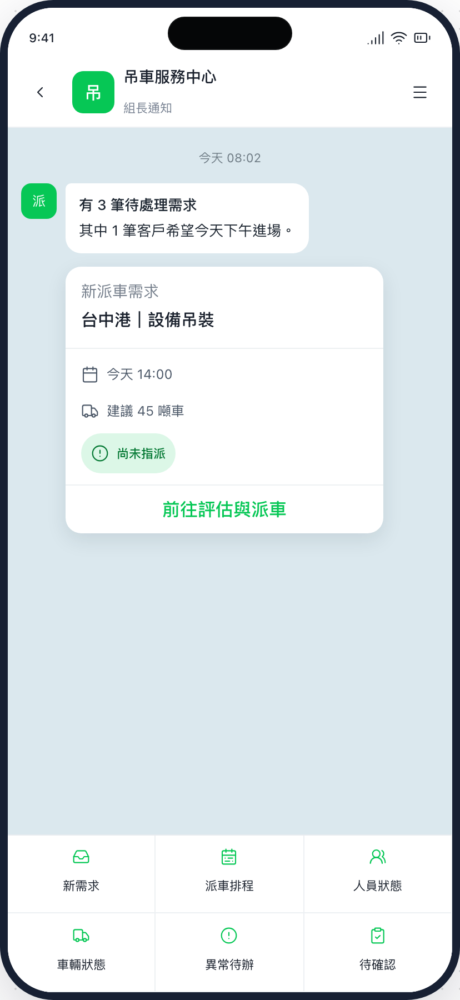
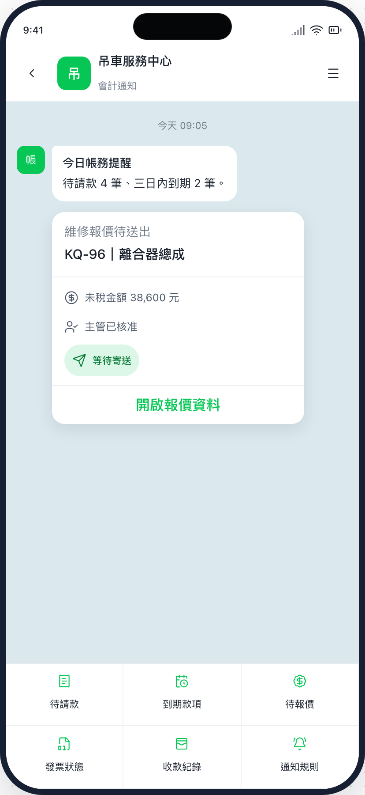
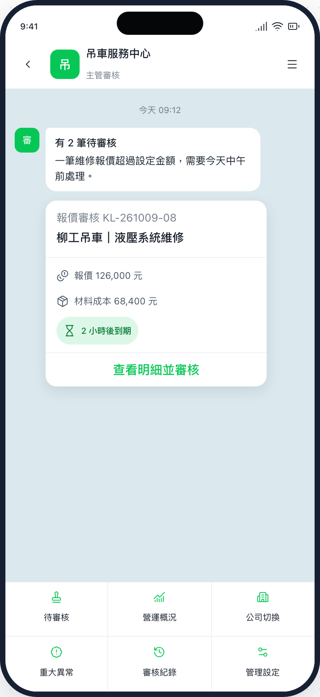
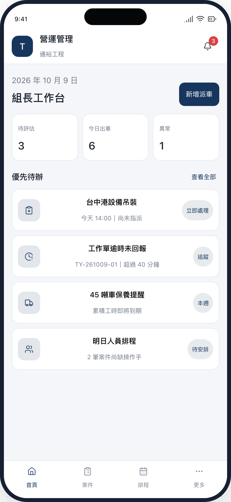
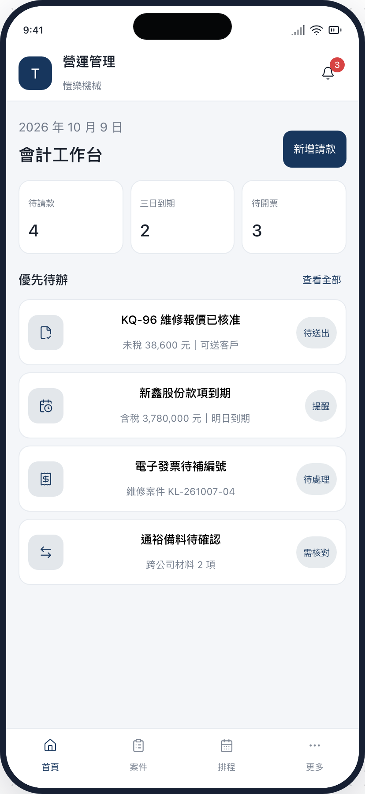
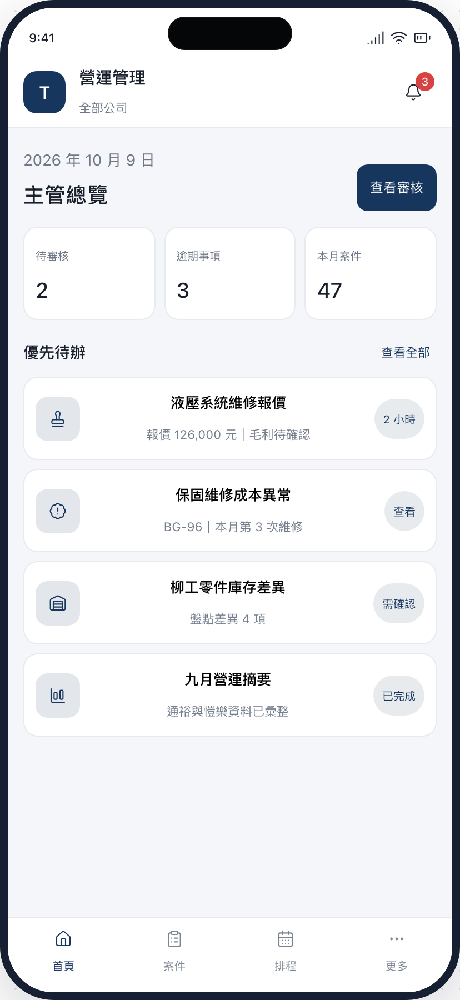

LINE 行動入口 / 01 OF 08
客戶操作畫面

來源：01_LINE_客戶.png · 828 × 1800 pxLINE 行動入口 / 02 OF 08
現場員工操作畫面

來源：02_LINE_現場員工.png · 828 × 1800 pxLINE 行動入口 / 03 OF 08
組長操作畫面

來源：03_LINE_組長.png · 828 × 1800 pxLINE 行動入口 / 04 OF 08
會計操作畫面

來源：04_LINE_會計.png · 828 × 1800 pxLINE 行動入口 / 05 OF 08
主管操作畫面

來源：05_LINE_主管.png · 828 × 1800 px
來源：06_網頁後台_組長.png · 828 × 1800 px
來源：07_網頁後台_會計.png · 828 × 1800 px
來源：08_網頁後台_主管.png · 828 × 1800 px